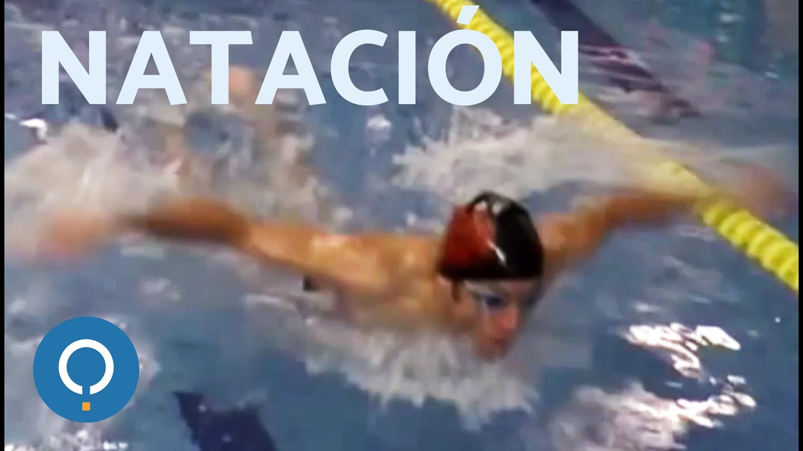

El precio promedio de una clase de natación en Buenos Aires es de $369.
Antes de comenzar a nadar debes contar con el equipo adecuado: Traje de baño cómodo. Debes tener un traje de baño que te brinde máxima libertad para realizar movimientos y que se ajuste a tu cuerpo. ... Gorro de baño. ... Gafas o googles. ... Toalla. ... Chanclas.
En general un niño puede aprender a nadar a partir de los 3 o 4 años de edad. A esa edad ya han aprendido a caminar bien, han ido desarrollando su cuerpo y su capacidad motora y de sincronización, y pueden realizar los movimientos necesarios para nadar.
